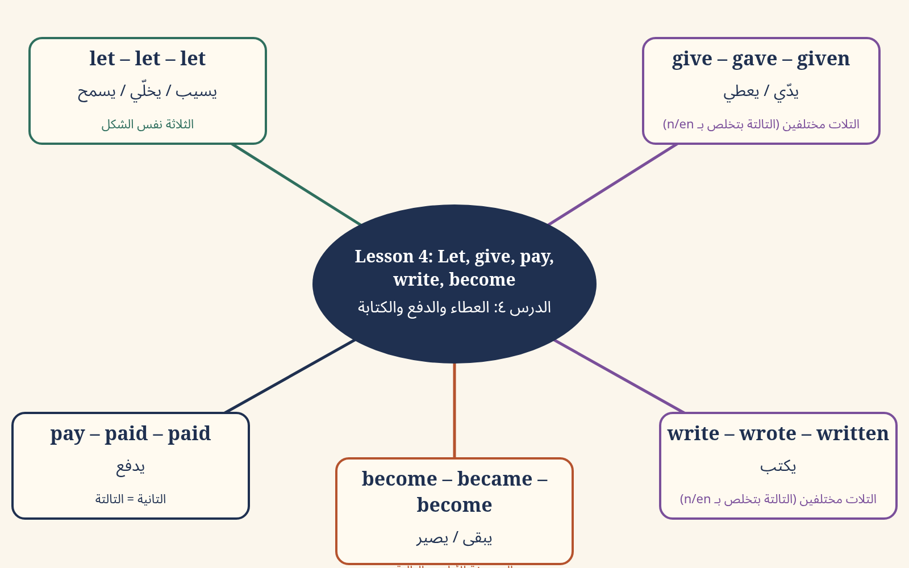

آداب الإنجليزية: قواعد وجرامر وشعر وأساطير
⭐
0
🔥
استمر!
🔤
الأفعال الشاذة 4: let، give، pay، write، become
5 أفعال
المستوى 1 من 5
📄 ملف الدرس PDF
🧠 شوف الخريطة الذهنية للدرس

→
الدرس اللي قبله
كل دروس الكورس
الدرس اللي بعده
←